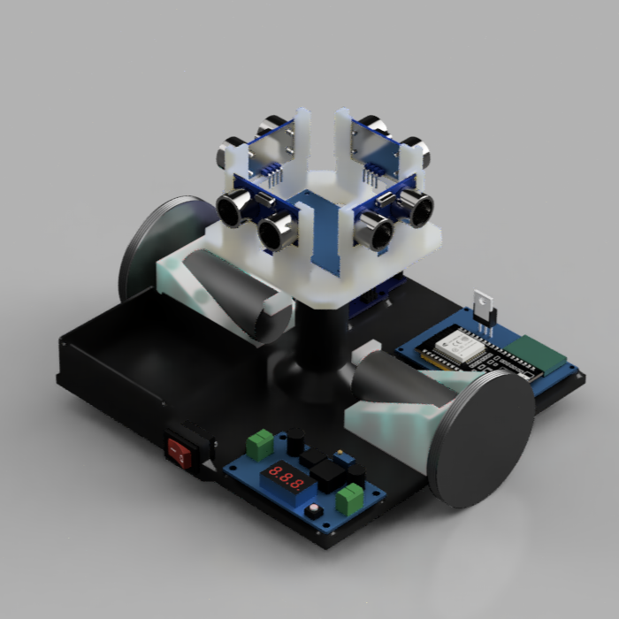
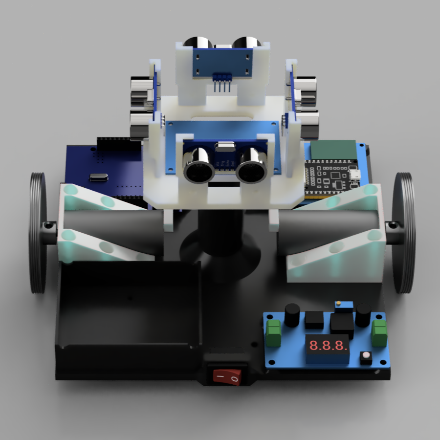
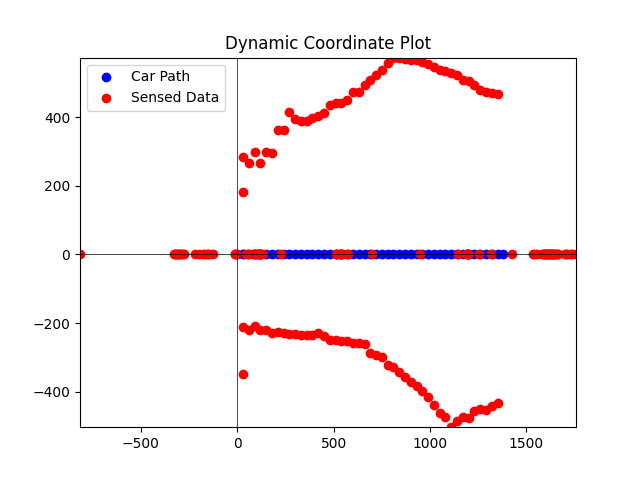
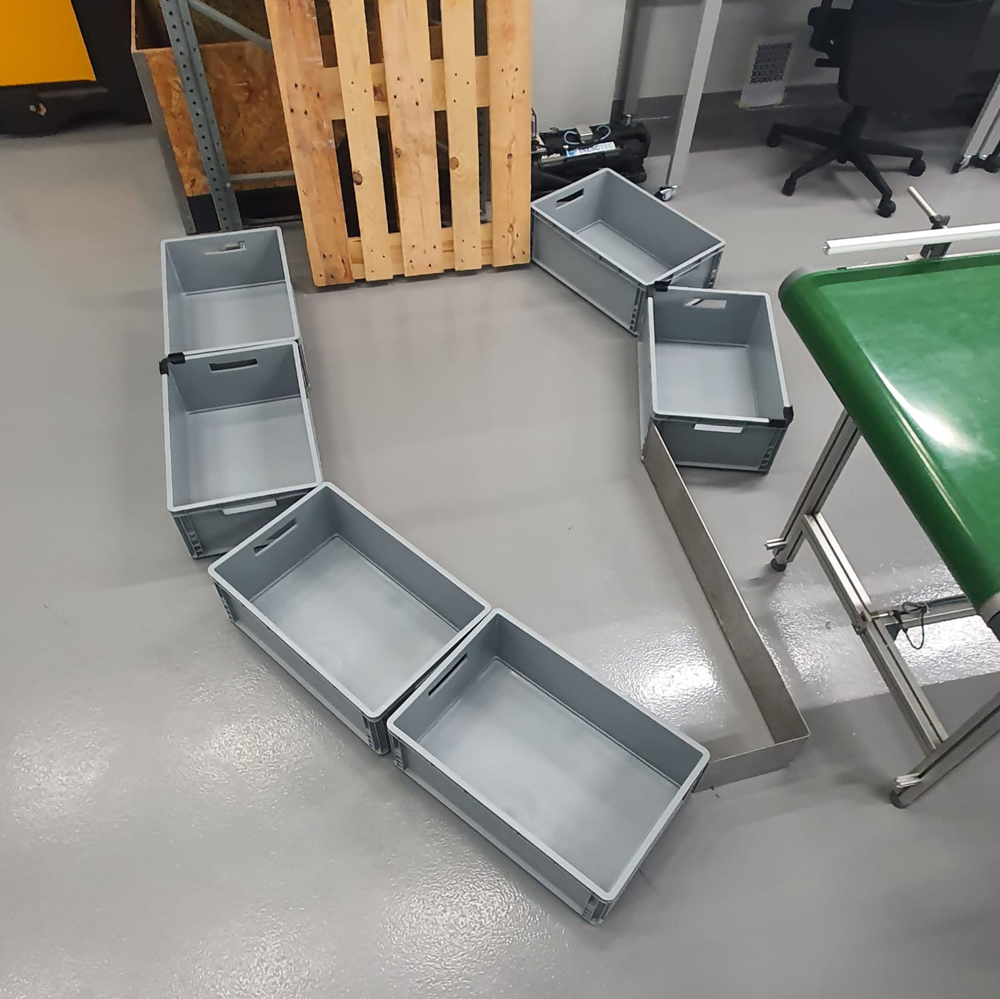

Introduction
Abstract
Autonomous Mobile Robots (AMRs) are increasingly becoming essential in various fields, from industrial automation to home robotics.
Their ability to navigate and operate independently in dynamic environments has opened numerous possibilities for their application.
This project aims to design and develop an AMR capable of autonomously mapping a 2D environment and navigating to specific locations within that mapped area. The goal is to create a cost-effective and efficient platform that demonstrates the potential of AMRs in real-world scenarios, with a focus on usability and accessibility.
Requirements
The robot to be built has the goal of mapping a given area, to achieve this we must comply with the following requirements:
• It must be capable of reliably relaying the current position in relation to some point, and current angle
• It must be Wi-Fi enabled in order to be controlled by an outside device
• It must be battery powered so that the robot may be fully autonomous
• It must be cheap
State of the Art
To determine the best approach for developing our project, it's important to understand the current state of available technologies. To achieve this, we have decided to create a comparison table that organizes the existing solutions based on their suitability for our goals, as presented in Table 1. Before creating the table, we must first define the key parameters for our project. The robot platform should be low-cost and feature Wi-Fi capabilities to enable remote communication and data transmission. Since the objective is to map a given area, the robot will require at least two motors equipped with encoders to gather positioning data, which is essential for the mapping process. Additionally, the robot must be equipped with distance sensors to measure the proximity of objects, ensuring accurate environmental mapping. Finally, the platform should be battery-powered for mobility and ease of use in different environments.
| Table1 | TurtleBot4 [1] | Hiwonder [2] | Kitronik [3] | JetBot Pro [4] |
|---|---|---|---|---|
| Motors | 2 | 4 | 2 | 2 |
| Encoders | YES | NO | YES | YES |
| Wireless Communication |
Wi-Fi | Wi-Fi | None | Wi-Fi |
| Sensos | LIDAR/Camera | US/Camera | US | LIDAR/Camera |
| Baterry | YES | YES | NO | YES |
| Price [€] | 2200 | 225 | 37 | 450 |
Architecture
System Overview
To achieve the goal of mapping a given area, a custom architecture was designed. This architecture consists of a microcontroller to control the AMR (Autonomous Mobile Robot) and another microcontroller serving as a server to relay data to an external computer and receive commands from it. This approach results in a computationally lightweight vehicle, which is crucial for keeping costs down. Additionally, using this architecture extends the system's lifespan, as a Wi-Fi antenna consumes significantly less power than a more powerful onboard computer.
High Level Architecture
Detailed Architecture
Hardware
Disclamer
The chosen componets, even if not the best solution available, are what was available at the time of writing and therefore were the ones chosen.
2D Sensors
| Range [m] | Resolution [mm] | Frequency [Hz] | Price [€] | |
|---|---|---|---|---|
| HC-SR04P | 0.02 to 4 | 3 | 40 | 3.7 [5] |
| TFmini-S | 0.03 to 12 | 10 | 100 | 41 [6] |
| RPLIDAR A1M8 | 0.15 to 12 | 1% | 10 | 114 [7] |
For the 2D sensor, the HC-SR04P ultrasonic sensor was chosen.
Although these sensors are more limited compared to other options, they are significantly cheaper.
The limitations are mitigated by using four sensors, providing more comprehensive coverage. This setup enables the robot to take additional readings of its environment, resulting in a more accurate map.
This approach helps minimize costs while still achieving the desired outcomes.
Motors and encoders
| RPM | Voltage [V] | Current [mA] | Type of Encoder | Steps Per Rev | Price [€] | |
|---|---|---|---|---|---|---|
| JGA25 - 370DC |
170 | 6 | 200 | Magnetic | 22 | 9.6 [8] |
| N20 Gear Motor |
75 | 6 | 70 | Magnetic | 14 | 17.84 [9] |
| EMG30 | 170 | 12 | 200 | Magnetic | 11 | 45.82 [10] |
For the motors it was chosen to use the JGA25-370DC as it was the cheapest and the best equilibrium between the cost and quality.
The Steps per rev refers to the resolution of the encoder.
However, it is notable that this motor has a gear box, as such, these refer to motor revolutions and not shaft revolutions, making it far more precise than it appears.
Microcontrollers
| GPIO pins | Wi-Fi | Logic Level 1 [V] | CPU [MHz] | Price [€] | |
|---|---|---|---|---|---|
| Arduino Uno | 14 | NO | 5 | 16 | 11.97 [11] |
| ESP - 32 | 34 | YES | 3.3 | 240 | 5.28 [12] |
| Raspberry-pi Pico | 26 | NO | 3.3 | 133 | 6.9 [13] |
| Teensy 4.0 | 40 | NO | 3.3 | 600 | 37.4 [14] |
Since the chosen motor is a 6V motor, the selected microcontroller must support this voltage.
The Arduino Uno, based on the ATMEGA328P, fits this requirement.
Although a motor driver will be necessary to handle the required currents, no additional voltage regulation will be needed for the microcontroller itself.
However, as mentioned above, the Arduino Uno lacks Wi-Fi capabilities.
To address this, we will use an ESP-32, based on the dual-core Tensilica LX6, as a Wi-Fi relay.
While the ESP-32 will require a 5V voltage regulator and a level shifter to operate properly, this setup is still more straightforward than managing a motor driver with two voltage levels.
Batteries and Voltage Regulator
The batteries selected for this project are the industry-standard 18650 batteries, which are among the most used batteries in robotics. Typically, these batteries have a nominal voltage of 3.7V, with power capacity varying by manufacturer. To ensure a longer continuous runtime, the robot will be equipped with four of these batteries. Additionally, a voltage regulator will be included to stabilize and manage the voltage supplied from the batteries to the system.
Optimizations
Due to the limited number of GPIO pins on the Arduino Uno and the requirement of four pins per ultrasonic sensor, a multiplexer will be used to select one sensor at a time. This approach reduces the total number of required pins from ten to seven, enabling a more efficient use of the available GPIO resources.
The limited number of external interrupts on the ATMEGA328P microcontroller also posed a challenge. To address this, half of the resolution of the motors was sacrificed, as it was only possible to use a single encoder wire per motor.
Additionally, it will not be possible to make the motors rotate counterclockwise (move the robot backward or rotate in place) because the motor drivers are controlled by a single PWM signal, with all other pins allocated for other functions.
3D Model
To plan the best approach for building the robot, it was chosen to fully model it in Fusion 360.
This 3D model will help identify the optimal design, minimizing the need for reprinting the frame due to unforeseen changes.
The final model dimensions are 205 mm in width, 175 mm in depth, and 124 mm in height.
 
Custom PCB
One of the project's objectives was to design a custom PCB tailored to the specific requirements of the project.
This was accomplished using EasyEDA, a free online PCB design tool.
The PCB includes support for all necessary components, with connectors for the motors and ultrasonic sensors.
The design is shown below.
Software
Implementation
The software was developed in C++ using VSCode and PlatformIO. The code was structured into three main components: motor control, sensor reading, and Wi-Fi communication.
Initially, the implementation relied on objects and structures, spread across multiple header and source files. However, this approach posed challenges, as the compiled code struggled to run efficiently on the ATMEGA328P microcontroller.
To address this issue, the code was refactored into a more procedural style. This adjustment significantly improved memory usage efficiency, allowing the code to execute properly on the hardware.
Functions
Initializations
The initializations were responsible for setting up the microcontroller and its peripherals.
The initializations focused on two main components separated into two functions: initTimersandInterrupts and initPins
These functions were responsible for setting up the timers and interrupts, as well as the pins for the ultrasonic sensors and motor control.
The timers and pins were set as shown below.
Motor Control
The motor control functions were designed to handle the movement of the robot. The code was structured to allow for precise control of the robot's speed and direction.
This was achieved using the encoders to measure how much the wheels have turn and calculate the traveled distance from there.
The motors are controlled trough a motor driver, which is controlled by the microcontroller using a PWM signal calculated from the target distance and current distance.
Ultrasonic Sensors
The ultrasonic sensors are controlled using a multiplexer to choose the one we pretend to read from.
The trigger and echo use the timer1 as it is a 16-bit timer, which allows for a more precise reading.
The timer was initialized as shown above.
It was a goal of the project, to increase the accuracy of the reading, to take a temperature reading and adjust the speed of sound accordingly.
Unfortunately, this was not possible due to time constraints.
Wi-Fi Communication
The Wi-Fi communication was implemented using the ESP8266 module, which is a WiFi module based on the ESP8266 chip.
The module was configured to connect to a WiFi network and send data to a server.
The ESP8266 module was configured to connect to a WiFi network and send data to the computer.
The computer then takes the data and draws a map, it also decides the next move of the robot.
The computer then sends the data to the ESP8266 module, which then sends it to the Arduino.
Results
Mapping
Although mapping was achieved, there is significant room for improvement. The intention was for the received data to be used to draw a map, which was successfully accomplished when the robot moved in a straight line. A more ambitious goal was to utilize the map for navigation after the area was mapped, but unfortunately, this was not achieved.
The decision-making process also requires enhancements, as it lacks dynamism, leaving certain parts of the map unattainable.
The process could also be made more efficient if mapping were performed while the robot moved. However, this was not implemented due to concerns about inefficient use of the encoders. Addressing this limitation could be a major improvement for a future version of the project.
Below is an example of a map created by the robot.
As can be seen, the robot was able to map the area but was unable to navigate it, moving only in a straight line.
This limitation arose from having only two available PWM signals, which prevented the robot's wheels from turning in both directions. This made turning calculations very challenging, and due to time constraints, it was not possible to implement the turning algorithm for the robot.
An attempt was made using the Ackermann steering model, but the results were not satisfactory.


Cost
The project was designed to minimize costs.
The total cost of the project was 40 €, which is comparable to the Kitronik robot kit, priced at 37€. However, the major advantage of this project is that the robot is Wi-Fi ready and has a battery.
For a future iteration, it would be worthwhile to remove the Arduino UNO and rely solely on the more powerful ESP32. This change would enable the use of multiple PWM signals, provide significantly more processing power, and reduce the overall cost.
Wheels Inovation
Although somewhat unexpected, one of the major issues faced was with the wheels. Since they are 3D-printed, like the rest of the robot, traction proved to be a significant challenge.
The first attempt to address this issue involved using rubber bands, but this was insufficient. A second approach was to make the wheels wider and apply sandpaper tape to roughen their surface, but this also failed to provide adequate traction. The final solution was to coat the outside of the wheels with a layer of hot glue, which effectively acted as a tire.
A recommendation for anyone attempting to replicate this project is to use pre-made wheels instead of 3D-printed ones.
Conclusions
Considerations and Future Improvements
Despite its limitations, the project was considered a success, as it was able to map the area and transmit the data to a computer while maintaining a low cost.
As mentioned above, future improvements could include using the ESP32 as the main microcontroller, making better use of the motor encoders, and implementing a more dynamic decision-making process.
These enhancements would result in a more comprehensive and efficient solution at a lower price point compared to current market offerings.
Pictures of the Project
Below are some pictures of the project.
References
Links
Every link present below was acessed and worked on the 11th of January 2025.
[1] Clearpath Robotics TurtleBot 4 Mobile Robot
[2] Hiwonder TurboPi Raspberry Pi Omni Mecanum Wheels Robot
[3] Kitronik Autonomous Robotics Platform
[4] JetBot Pro ROS AI Kit Dual Controllers
[5] HC-SR04P Ultrasonic Range Finder 3.3-5V
[6] TFmini S Uart
[7] RPLIDAR A1M8-R6 - SLAMTEC SCANNER LASER 360º
[8] JGA25-370 DC Motor De Desaceleração com Código De Medição De Velocidade Do Codificador
[9] Micro Motor com Encoder e Caixa Redutora 210:1 - 6V 75RPM
[10] EMG30 - GearMotor with Encoder
[11] Arduino UNO R3
[12] ESP-WROOM-32 Placa de Desenvolvimento
[13] Raspberry Pi Pico 2
[14] Teensy 4.0
Useful Links and Resources
Every link present below was acessed and worked on the 11th of January 2025.
Chat GPT for code and text revision
Differential Wheeled Robot Wikipedia
Drawio to draw all the diagrams
Fusion 360 to draw the 3D model
EasyEDA to draw the PCB
ATMEGA328P Datasheet
The Moodle for the curricular unit
Acknowledgements
A special thanks to Fabio Pacheco, Diogo Paiva and Bruno Moreira for the help and support during the project.
A special thanks to the teacher, Ramiro de Sousa Barbosa, for the support and guidance provided during the project.
Publicly Available
This project is publically available at